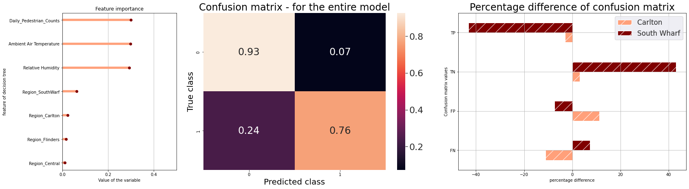

Now that we have explored our data, we can move to the next part, which is trying to make a prediction! We will look in the future! For this, we will use some cool machine learning models!
This is the longest section
of our Project, so bear with us! As we are good data scientists, we need to investigate our models thoroughly before making any assumptions.
First, we had to decide: what is our value we wish to predict on? Also, what
we wanted to solve was a simple classification task - so we needed to transform this variable into a binary-class. You can think of a binary-class value something that is trying to answer a Yes/No question.
We have
noticed in our previous chapters that the most interesting temporal patterns occur for Particulate Air Pollution particles, both 5 and 10μm in diameter - also referred to as PM2.5 and PM10 particles. Thus, we have decided that
it would be interesting to make predictions on them!
The amount of these particles in the air is directly referring to air pollution, so we have investigated: for which air particle concentration limits is it considered
to be a moderately high air pollution? According to this source , it seems that the quality of the air decreases
when the big particle density (PM10) reaches a concentration above 40μg/m3. Regarding PM2.5, a study in the Journal of the American Medical Association estimates that
for every 10μg/m3, there is an associated 4%, 6% and 8% increased risk of cardiopulmonary and lung cancer mortality, respectively. So we can take those thersholds into consideration for when to decide that there is moderate
pollution in the air which is not good for the citizen’s health.
Unfortunately, based on the boxplot of PM particles, we do not have that many high values. Finally, we have chosen a slightly lower threshold that the
studies above have shown, which are: 8 μg/m3 PM2.5 and 30 μg/m3. These lower threshold allow us to have a more balanced dataset. Now, what we are trying to answer is: Is there, on a daily average, an occurrence of moderate
air pollution in a given area? 'Yes' is indicated by PM values equal or above this thresholds and 'No' otherwise. In our data, values of 1/'True' indicates ‘Yes’ and 0/'False' indicates ‘No’. Simple, right? We have made a column
with those values, named 'Moderate Air Pollution'. This is the target we are trying to predict!
Overall, what we are trying model was a classifier which could predict whether there was moderately high air pollution
on that day, given a specific area in the city, an average local temperature and humidity, as well as pedestrians in the zone. Why? Well, this model would be a useful tool for green urban planning in the city: it is nice to
predict in advance the air pollution in the city based on some meteorological forecast and how crowded a place might be! This would be useful when planning social events, during which season etc. It would also be useful to
know which areas have a more dire need of infrastructural changes.
Now, let's dive deeper into the modeling. For this, we have tried a Decision Tree, a Random Forrest Classifier and a Logistic Regression (links for
definition?). These are supervised machine learning model which can help us with the classification task (answering our air pollution question with 'yes' or 'no', 'true' or 'false'). A Decision Tree uses a tree-like model and
a separation between the classes using a set of questions to be answered. These separation is based on the features of our dataset, and the questions are optimal thresholds set by the tree. The thresholds are chosed according
to the ginni index which measures the purity of classes.
We used a Random Forrest Classifies, which is an ensemble method using multiple Decision Trees. In our Notebook we have optimized the tree, such that we chose the best hyperparameter combinations from a manually adjusted range. Below is plotted only one tree of our random forrest:

Huge, right? Well, the point is to show that the samples are split based on the mentioned features, as we specified. We can see that the branches get more pure (have more samples of a certain class) at the bottom. We
have used this model (you can find it in our Github Repository as 'random_forest_best.joblib') and used it to make predictions on our dataset.
The
classification results are pleasantly surprising! Our Random Forrest Classifier has an accuracy of 86.13% when predicting whether there is moderate air pollution in a given local area. Here are the areas our models made predictions
for:
The interactive plot above made with Bokeh shows the sample areas collected by
the regions they were placed in: South Wharf, Flinders Street Crossroad, Central Area and Carlton. When one interacts with it, one can see the occurrences of actual moderate air pollution occurrences for each given area. We
can see that most samples are collected from the area in Carlton, whereas fewest are actually collected from the Central Area. This could be due to the different periods when the sensors were active. Another thing to notice
is that, while most of the areas have an even number of high readings, South Wharf area does not have many moderate air pollution occurrences. This means that the dataset is imbalanced and that there might be bias in the model.
Let us investigate the classification results of our model more thoroughly:

There are three plots in the figure about and we will go through them
one by one.
The plot in the left shows the Feature Importance of the model, which shows the importance of each feature in our model. This means: what is the most important micro-climate or urban factor the model relied
on for making predictions? It looks like the Daily Pedestrian (average) Counts has an important influence for predicting moderate air pollution, and so do the ambient air temperature and humidity. The temperature factor was
expected, since arid weather is usually loosening more dust into the air. Humidity is also explainable: when it is higher humidity there is more deposition
of particulate matter in
the air . However, we found something interesting: air pollution is also affected by the number of pedestrians in a given location!
- at least when it comes to daily averages.
The plot in the middle shows a Confusion Matrix of our total predictions. Our model has predicted 76% of the true positives and 93% of the true negatives, which is a good
sign. Overall, we have very low numeber of false positives (FP), but about 24% of the actual negative classes were not predicted. This means that our model sometimes asseses wrongly when there is a moderate a moderate air pollution
in a given local area. But overall our model is good at predicting when there is air pollution in a given area.
The plot to the right is the percentage difference. Since we have seen an imbalance with the areas in Carlton
and South Wharf, we have tried to compare the percentage differences between those based on their confusion matrices values. There is a big percentage difference of TP and TN, but not that big of a difference the FP and the
FN. We are more interested in the latter difference, since this would have shown if the model misclassifies differently based on a specific area. It might do so slightly, but the percentage difference is not that much.
One last thing to inspect whether our model actually is actually biased towards the area is to plot the confusion matrices for each of the regions:

Let us inspect the classification for each region more carefully. The TP and TN rates are high for most of the areas, compared to the FN and FP. which is
good! However, compared to the other regions, there is a slightly increased number of false positives (FP) and false negatives (FN) for the areas in Carlton. This means that the model misclassifies a bit more when it comes
to areas in Carlton, so it might be slightly biased. It is to note, however, the percentage increase is not extremely high.
Let us see more evaluation metrics of our model performance: the AUC ROC! Don't worry, we will
explain in detail what those are.
Firstly, you need to know one confusion matrix is calculated using a given threshold. Let me explain what that is: when predicting in the background, the model actually outputs probabilities
of belonging to a given class. Then, the probabilities are separated based on a threshold (which is by default 50%) to allocate each output to a class. For example, if a model outputs a prediction of 0.6 (60%), then it is categorized
as class 1 (moderate air pollution), since the probability is above the 0.5 (50%) threshold. More frankly, if the model thinks there is 60% chance that there is air pollution in the city, it would then say there is air pollution
in the city. Get the assigned classes your model predicted and boom, you make a confusion matrix.
We can then try different thresholds and create multiple confusion matrices - how wonderful! Now, let us calculate and
plot the ROC (Receiver Operating Characteristics) curves for a given set of thresholds. What are those you ask?
The ROC curve is plotted as between the true positive rate (TPR) and the false negative rate (FPR). TPR
is sensitivity and is represented as the amount of true positives over the total amount of positives in our dataset. FPR is specificity and it represents the amount of true negatives over the amount of total negatives in our
dataset. Those are rather metrics that indicate whether our model is able to distinguish between classes. Those values can be deduced from each of the confusion matrices obtained at different thresholds.
Now comes the
Area Under the Curve (AUC), which is an important evaluation metric! The AUC indicates how good the model each at making classifications for each region. A good model has the AUC area as close to 1 as possible, which means
that it has a good measure of distinguishing between the classes of our target. An AUC near 0 means the opposite. Now that we have defined the theoretical terms, let's take a look at the ROC curves we have plotted.
We have created a list of random thresholds and plotted the ROC curves using the TPR and FPR rates obtained at teach hreshold. Bellow you can see the ROC curves separated by the areas of each region. You can toggle around the
ROC points to see the thresholds chosen:
It seems that the ROC curve looks slightly different for Carlton compared to the other areas. By the eye, it seems
that the area under curve is smaller for Carlton, and it is no surprise as it contains more false positives and false negatives. Overall, it has been decided not to debias this model. Actually, we have tried it in our Notebook . Given that we have more samples from Carlton, it is expected that the model misclassifies more since there are more samples and less chance for overfitting (the model makes more mistakes). Actually, it could be that the model
is slightly overfitting for the other regions (South Wharf, Flinders Crossroad and Central Melbourne), since there are not as many samples - so the model learns to find rules to fit the data more easily. Overfitting means the
model is not so good at making predictions on new data. This is however an assumption and needs to be more investigated using other techniques, such as k-fold Cross-Validation - unfortunately, we did not have time to implement this, but would have been cool though! , but the model did not necessarily improve.
Considering everything, our model seems to be overall good at predicting whether
there is air pollution in certain areas of the city based on different micro-climate factors and number of pedestrians. One should further asses the overfitting possibility of the model. To improve our model, what one should
do is to feed our model more data - that is, give our model more measurements from the areas in: South Wharf, Flinders Crossroad and Central Melbourne. Who knows, perhaps we could do this once more data will be released!
Phew, that was a long reading!, Thank you for bearing with us! This has helped us to understand more about microclimate changes in Melbourne! You can now move on to reading about the Key Takeawyas that we have concluded about our project.